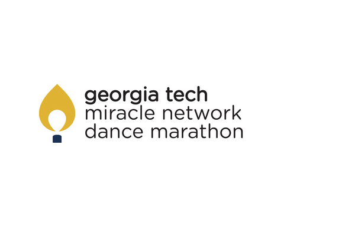

About Me

 Georgia Institute of Technology
2014 - 2018
Georgia Institute of Technology
2014 - 2018
Computer Science, B.S.
Atlanta, Georgia
Courses:
 Polytechnic Univsertiy of Catalonia
Summer 2016
Polytechnic Univsertiy of Catalonia
Summer 2016
Study Abroad
Barcelona, Spain
Spent a semester studying abroad in Barcelona, Spain. Georgia Tech Professors taught courses at the UPC campus.
BaslamiqProto.io
 Coca Cola Enterprises
Summer 2015
Coca Cola Enterprises
Summer 2015
Salesforce Intern
Atlanta, Georgia
Worked on the Salesforce team to prepare for automation testing using the Provar Salesforce automation test application. Focused on communicating with managers in CCE foreign offices to organize and prioritize test cases for all CCE Salesforce applications.
ProvarExcel
For The Kids at Georgia Tech
2014-Present
Director of Campus Relations
Atlanta, Georgia
I have been involved in a philanthropic organization on Georgia Tech's campus. We raise awareness and money for Children's Miracle Network. All the money we raise stays local at our three Children's Healthcare of Atlanta Hospitals. My first year I was on the Dancer Relations Committee, my second year I was honored to serve on the Executive Board as the Community Outreach Chair, and this year I am serving on the Executive Board as the Director of Campus Outreach. This past year we raised $152,125.17 for the kids! Looking forward to raising much more for the kids this year!
Phi Mu Fraternity
2015-Present
Executive Secretary
Atlanta, Georgia
I serve as the Executive Secretary on the Phi Mu Executive Board. I take minutes at all executive and chapter meetings. I am also in charge of maintaining all partipation and attendance points for the chapter of 200 people and communicating all events effectively.